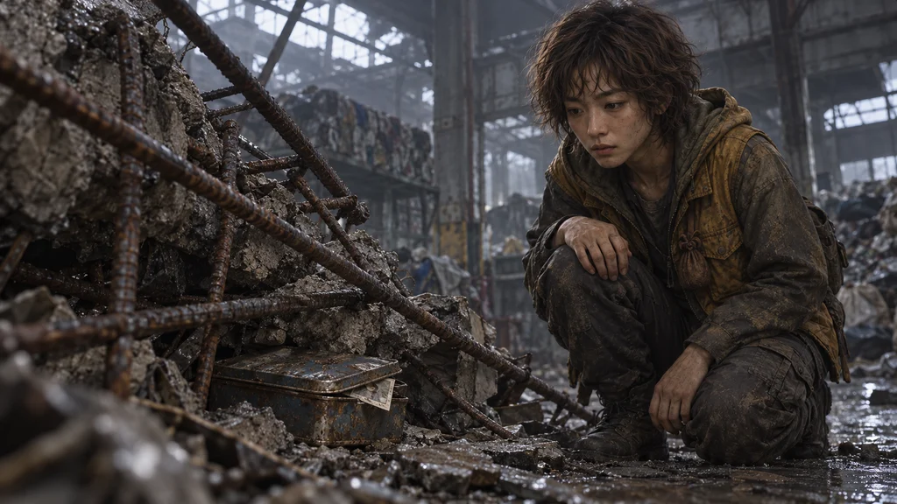
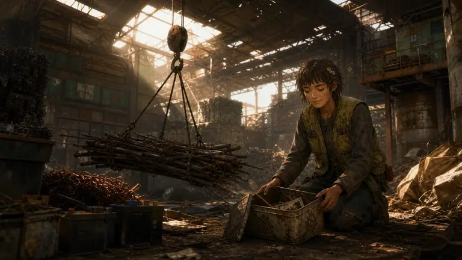

사건 단계 일치 / 교체 후보
아직, 꺼내지 못한 상자.
재이는 무너진 창고에서 가족의 상자를 찾았습니다. 어떻게 꺼낼지는 이제 플레이어가 고릅니다.
디자인 초안 · 게임 미연결 · 실제 게임 크롭 검수 대기 · 저장 상태와 무관
새 후보 — 구출 전

연결 대상 후보: 「값을 매길 수 없는 상자」의 진입·선택 전. 다른 고물 수집 사건에는 일괄 교체하지 않습니다.
기존 그림 — 이미 꺼낸 상태

연결 전 확인
새 그림의 얼굴·상자·손은 원본에서 확인했습니다. 360px의 실제 사건 화면에서 상자가 너무 작지 않은지, 얼굴이 잘리지 않는지 확인한 뒤 연결합니다. 결과 그림은 각 선택의 구출 방식에 맞춰 별도로 검토해야 합니다.